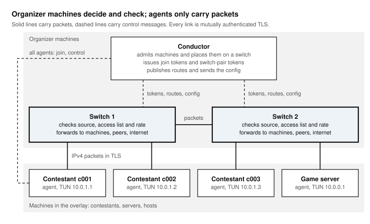

Architecture¶
vNet has three programs. Each runs as its own process, usually as a systemd service, and they talk to each other over TCP, with TLS on every link.


Organizer machines decide and check; agents only carry packets.¶
The conductor¶
One per event, on an organizer machine. It is the control plane:
it admits switches and agents, checking each name and key against the auth file (Auth file);
it places each agent on a switch, round-robin among the switches that are up, and gives the agent and the switch a one-time token for that join;
it tells every switch where every agent is, so packets can be forwarded directly between switches;
it holds the access list (Switch config) and sends it to every switch.
The conductor never forwards a packet. When it is down, machines already connected keep their data path; only joins wait for it.
The switches¶
One or more, on organizer machines. They are the data plane. Each switch:
accepts the agents the conductor sends to it;
checks every packet an agent sends: the source address must be the agent’s own, the destination must be allowed by the access list, and the agent must be within its rate limit;
delivers the packet to a local agent, forwards it to the switch that holds the destination, or sends it to the internet through its own uplink with address translation;
checks again every packet received from another switch, so a faulty peer cannot reach a machine the rules do not allow.
The packet engine of a switch is called the BlackBox in the code.
The agents¶
One per machine in the overlay: contestant machines, the contest server, anything that must take part. An agent:
joins through the conductor and authenticates to its switch;
opens a TUN interface,
vnet-<name>, with its virtual address, and by default makes it the machine’s default route, so every IPv4 packet goes through the switch;keeps the routes to the conductor and to its switch on the physical network, plus what the bypass file lists;
with lockdown on, installs a host firewall that blocks the physical network around the overlay (Lock down contestant machines).
An agent makes no decision about packets. Whatever its machine sends, the switch decides.
Addresses¶
Every agent has a virtual address, assigned in the access list, inside
the overlay prefix (10.0.0.0/8 unless VNET_OVERLAY_CIDR says
otherwise). Organizer machines keep their physical addresses, which must
not fall inside the overlay prefix.
A switch also has a TUN interface, vnet-out, at 192.0.2.1/32, through
which allowed internet traffic leaves with address translation on the
switch’s own default route.
Networks¶
Each process announces a network name when it registers
(VNET_NETWORK). Agents announce vnet.internal and switches
::internet by default. The conductor places an agent on a switch of the
same network or of ::internet. With the defaults, any agent may go to
any switch; distinct networks pin a group of machines to a group of
switches, for instance one switch per room.
Ports and links¶
Link |
Port |
Carries |
|---|---|---|
agent to conductor |
5000 ( |
joins, heartbeats, reconnection |
switch to conductor |
5000 |
registration, tokens, routes, the access list |
agent to switch |
the switch’s port (6000, …) |
the agent’s packets |
switch to switch |
the switch’s port |
packets between machines on different switches |
Every link is one TCP connection carrying framed messages (Wire protocol). Packets between agents ride inside these links: the overlay is IPv4 over TLS over TCP.